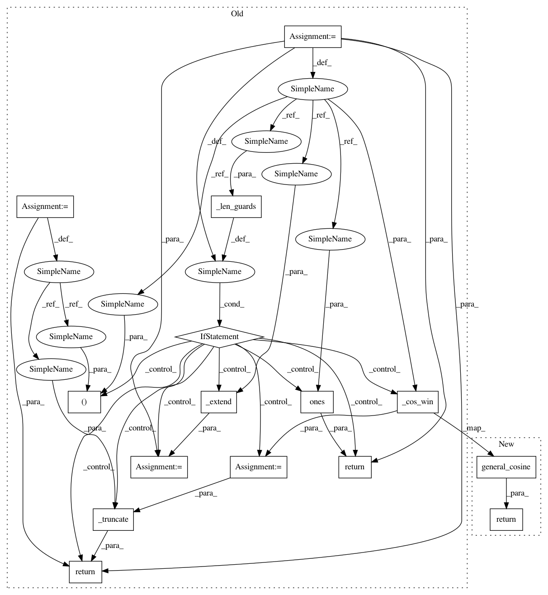

ddf48d712f2619228de9ed62eec747c8a4a690ca,scipy/signal/windows/windows.py,,blackmanharris,#Any#Any#,513
Before Change
>>> plt.xlabel("Normalized frequency [cycles per sample]")
if _len_guards(M):
return np.ones(M)
M, needs_trunc = _extend(M, sym)
w = _cos_win(M, [0.35875, 0.48829, 0.14128, 0.01168])
return _truncate(w, needs_trunc)
def flattop(M, sym=True):
Return a flat top window.
After Change
>>> plt.xlabel("Normalized frequency [cycles per sample]")
return general_cosine(M, [0.35875, 0.48829, 0.14128, 0.01168], sym)
def flattop(M, sym=True):
Return a flat top window.
In pattern: SUPERPATTERN
Frequency: 3
Non-data size: 15
Instances
Project Name: scipy/scipy
Commit Name: ddf48d712f2619228de9ed62eec747c8a4a690ca
Time: 2018-03-16
Author: jordanh@shaw.ca
File Name: scipy/signal/windows/windows.py
Class Name:
Method Name: blackmanharris
Project Name: scipy/scipy
Commit Name: ddf48d712f2619228de9ed62eec747c8a4a690ca
Time: 2018-03-16
Author: jordanh@shaw.ca
File Name: scipy/signal/windows/windows.py
Class Name:
Method Name: blackman
Project Name: scipy/scipy
Commit Name: ddf48d712f2619228de9ed62eec747c8a4a690ca
Time: 2018-03-16
Author: jordanh@shaw.ca
File Name: scipy/signal/windows/windows.py
Class Name:
Method Name: nuttall